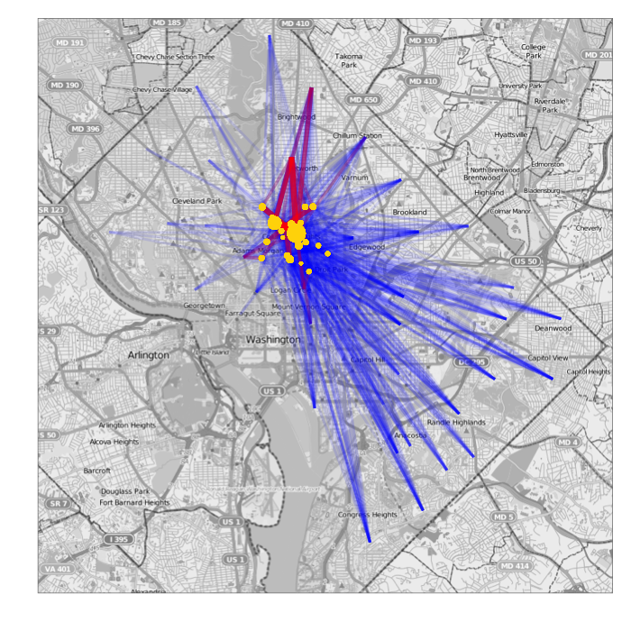
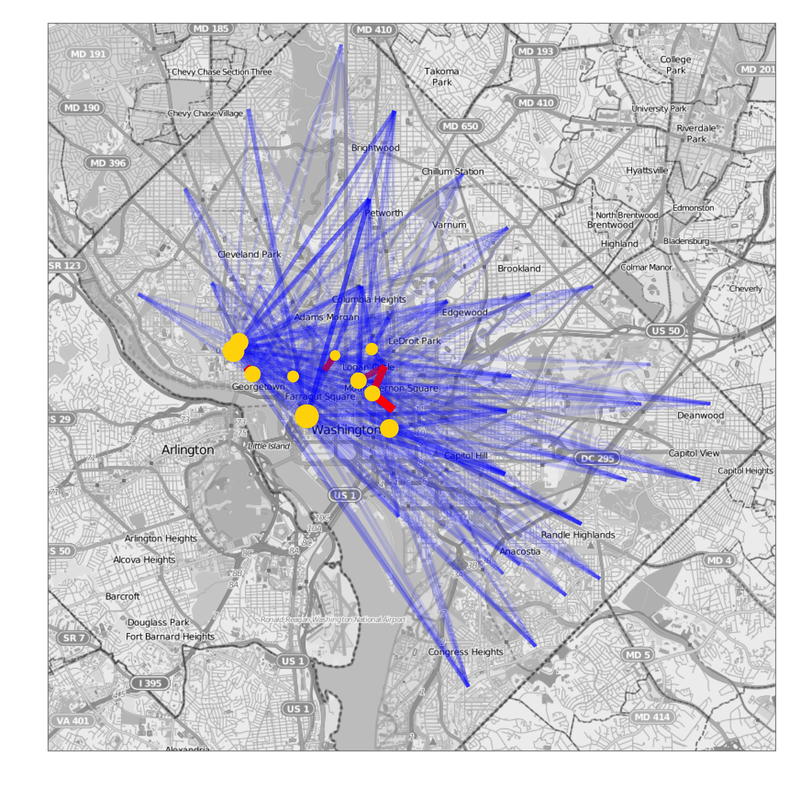
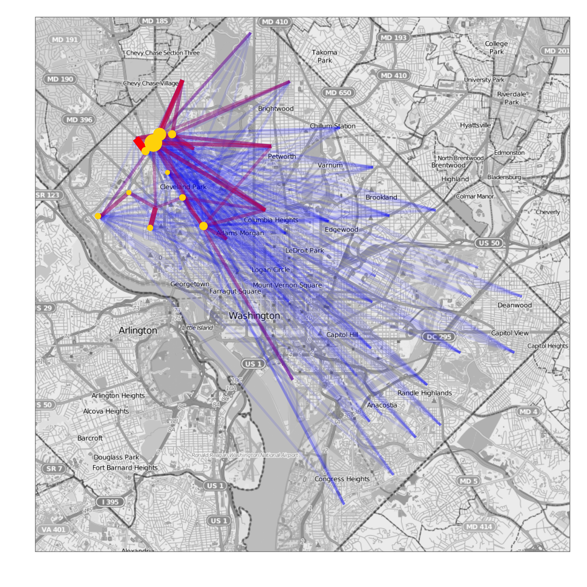
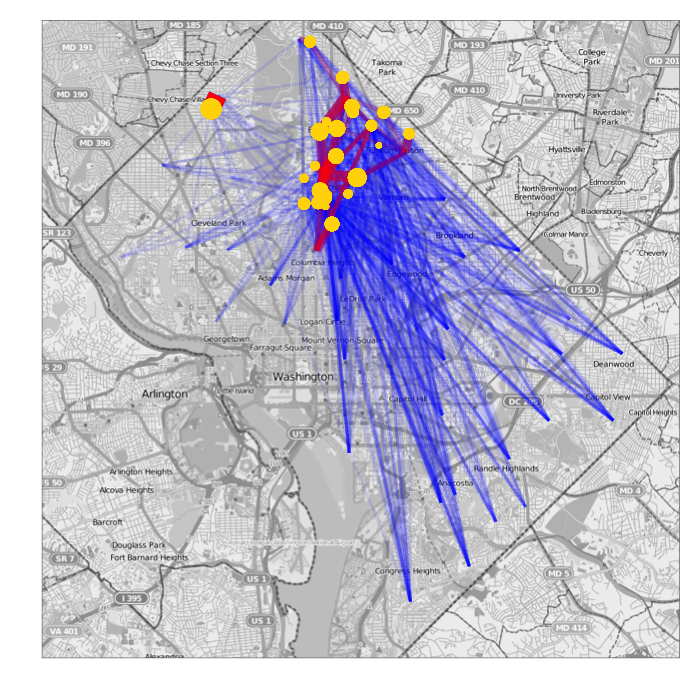
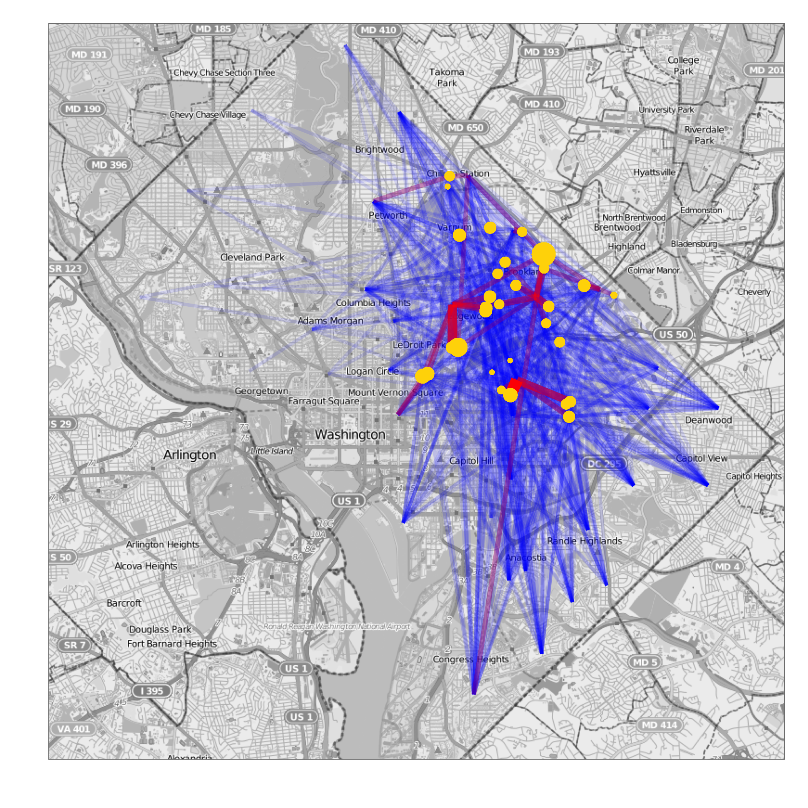
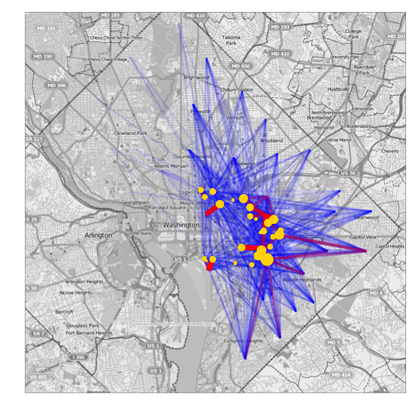
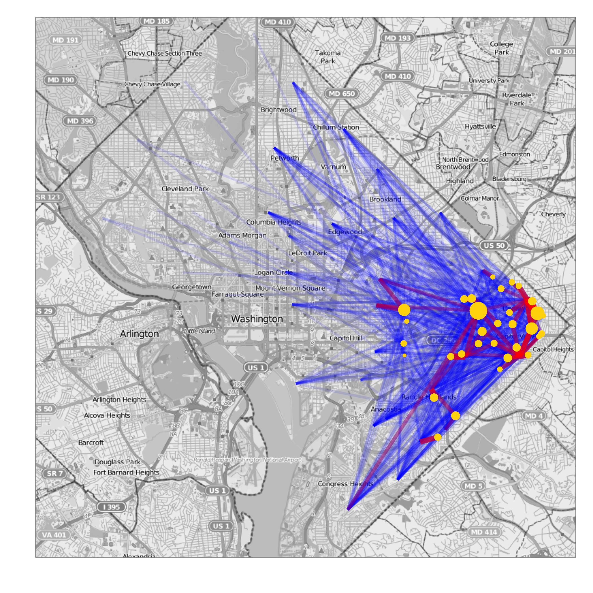
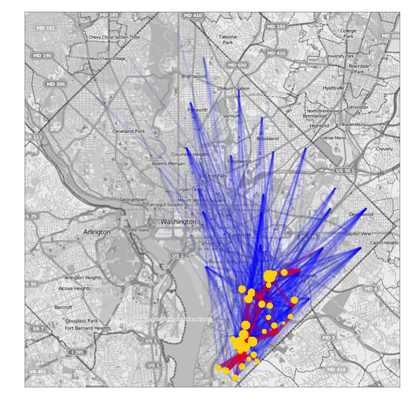

  <div class="container-fluid">
    <div class="row-fluid">
      <div class="span4">
        <p><b>Where will your children go to school?</b></p>

        <p>Will you enroll them in a school close to home or in a school across town 
        that provides special programming?</p>

        <p>Where do children from your neighborhood go to school? Do children from 
        the school that your children attend live in your community?</p>

        <p>How do you make a decision with so many education options -- the 
        DC Public Schools out-of-boundary process and DC Public Charter Schools?</p>

        <p>Choosing a school in DC can be confusing and we (the Code for DC 
        Education Project) hope to support family decisions with data. We recognize that the "right" 
        school for your children can be evaluated not just by standardized test scores, but by 
        teacher turnover, parent involvement, special programming, community and more. We have 
        built this tool starting with school populations by neighborhood, and gradually plan to add 
        information we collect from the city, from NGOs, the private sector, and you!</p>

        <p><em>Questions?</em> Contact us at <a href="mailto:edu@codefordc.org">edu@codefordc.org</a>. 
        <em>Want to help?</em>
        Join us at the next 
        <a href="http://www.meetup.com/cfabrigade/Washington-DC/880272/">Code for DC meetup</a>.</p>

        <p>Need the data? Go to <a href="http://opendatadc.org/">Open Data DC</a>.</p> 

        <p><a href="http://codefordc.org/">Code for DC</a> is the local chapter of 
        <a href="http://www.codeforamerica.org/">Code for America</a>.</p>
      </div>
      <div class="span8">
        <!-- http://stackoverflow.com/questions/11316383/bootstrap-hero-unit-height-leaflet -->
        <div id="imgRotator1">
<ul>
<li><a href=""></a></li>
<li><a href=""></a></li>
<li><a href=""></a></li>
<li><a href=""></a></li>
<li><a href=""></a></li>
<li><a href=""></a></li>
<li><a href=""></a></li>
<li><a href=""></a></li>
</ul></div>
<script type="text/javascript">
  var rotator1_options = {
       'speed': 2000, //how fast it roates
       'rate': 1000, //animation rate of the fade
       'width': '700px', //width of the rotator, minimally should equally image's width
       'height': '700px' //height of the rotator, minimally should equally image's height
    };

$('#imgRotator1').imgRotator(rotator1_options);
//call loadStyle method to add some css
var rotator1_style = "#imgRotator1 { border: 5px solid #000;} ";
$('#imgRotator1').imgRotator("loadStyle", "inline", rotator1_style);
</script>
        <!-- Le javascript
        ================================================== -->
        <!-- Placed at the end of the document so the pages load faster -->
        
        </div>
      </div>
    </div>
